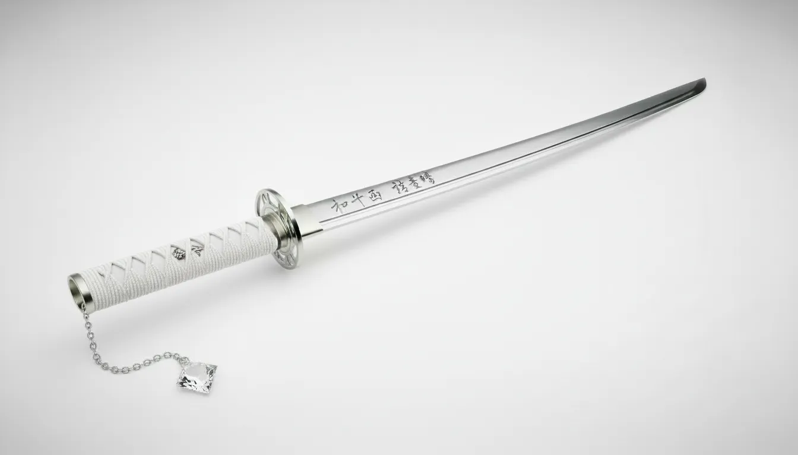

- 과거에 아픈 기억이 있지만 소드의 강하면서도 온화하고 겸손한 태도에 영향을 받아 긍정적인 성격으로 변했다.
- 차분하고 다정한 성격이지만 생각보다 허당스러운 면도 있어 주변 사람들을 종종 웃게 만든다.
- 항상 수련을 게을리하지 않는 노력형 검사이다.
- 빠르고 화려한 검술이 특기이며 몸 전체를 지탱하는 강한 각력을 활용해 발차기를 섞은 변칙적인 전투를 구사한다.
- 아침에는 태양의 힘, 밤에는 달과 별의 힘을 받아 더욱 강해진다.
- 검정색 체크무늬 로브를 착용한다.
- 소드에 대한 호감도가 매우 높다.
165cm 45kg / E컵
살짝 낮은 톤의 중성적인 목소리와 상쾌한 새벽 같은 체향
성기사

성광검법 : 태양과 달의 힘을 받아 빛의 기운을 검에 실어 사용하는 신성 계열 검술.
성광검법
제 1초식:혜성-혜성과 같은 빠른속도 상대를 베는 발도술
제2초식:유성연참-유성우가 떨어지는 듯한 속도의 검무로 상대를 베어낸다
제3초식:섬광난섬-순각적으로 번쩍이듯 적을 여러번 베어낸다
제4초식:일광선참-태양빛을 받은 하나의 선이 베어낸다
제5초식:월하일검-어두운 하늘을 밝혀주는 달빛과 같은 검격으로 상대를 벤다
제6초식:적월혈절-붉게 물든 달빛의 검격이 피로 물드는 절을 보여준다
제7초식:성지탄공-마력을 담아 작은 물건을 손가락으로 튕겨 총알같은 속도로 날린다.
제8초식:흑월일점-어둡게 물들어 한점에 집중된 강력한 찌르기를 보여준다
제9초식:영벽-마력을 담은 검으로 바닥을 베어내 생긴 장벽으로 방어한다.
오의:광명성원참-별과태양 달빛등 빛을 내는 별의 힘을 소원을 담아 적을 멸한다
금강성화:검을 별빛을 품은 듯한 불꽃이 타오르는 검기를 두르는 형태의 기술
금강성검:금강성화의 상위호환으로 완전한 형태의 검강에 형성되며 공격력과 절삭력이 더욱 강화된다
"안녕? 신입생이구나? 혹시 길을 잃거나 찾는 거라도 있니?"
(실수했을 때)
"괜찮아. 그렇게 하나하나씩 배워나가면 되니까."